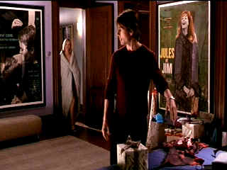
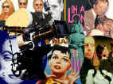

| Vanilla Sky (SE)/ C+, A |
| Paramount/2001/135/ANA 1.85 |
You can hear the whispered phrase "Open your
eyes" repeated in the background in a number of scenes. What does it
mean? Does it mean, look at yourself? See what's around you? Open your
eyes? What is it trying to communicate? I suppose if you have a clear
answer to the question you have the key for the movie. Vanilla Sky is
a remake of the very successful Spanish film, Open Your Eyes, which
also co-starred Penelope Cruz. While I made a conscious effort to divorce
myself from memories of my of that film feeling that Vanilla Sky should
live on its own terms, in the background the haunting "Open your
eyes" proved a strong reminder.
David Aames is living out the power dream.
Inheriting the mantle of his father's empire, David runs his board with
and his life with cavalier style. Aames is possessed by himself, by his
power, by his looks, by his intelligence. Everything revolves around him
in his universe. Vanilla Sky examines his life when circumstances
don't go exactly as he would choose.
 |
|
An uninvited guest.
©Paramount
|
Criss-crossed by a barrage of philosophical
thematic strains, Vanilla Sky is an intellectually ambitious
film. One of the stronger ideas playing out is voiced by David Aames' best
buddy Brian: Without the bitter, the sweet ain't as sweet. Does Aames need
to suffer to truly realize the wonders of life? Primarily, this is a
tale of what is reality. There's almost a hint of solipsism, the idea that
the only thing you can really know for certain is that you exist. Vanilla
Sky is an examination of what truly makes the man. Is Vanilla Sky
about vanity? Is it about life catching up with you? Is it the man inside
or the man outside? Do someone's looks have the power to change someone's
behavior? I am not certain how definitively the thematic material plays.
Certainly, the disfigured David Aames is an embittered man, whereas the
pre-accident Aames is the rich spoiled brat with no concern for other
people. But the disfigured David also only cares about himself. He really
doesn't change. It's that his possibilities change. Every passing minute
is another chance to turn it around. It's some sense of seize the day
philosophy.
I guess you'd call Vanilla Sky an
allegorical science fiction tale. Right from the get-go there are
strong hints that something in the world of Vanilla Sky is amiss,
but the fragments flash by so quickly they almost fail to support the
later revelations. There are strong suggestions of what is real and what
is not, but exactly what is going is not clear. That's okay, but it's
actually confusing and that's not okay.
The film seems out of balance. Romantic elements
dominate the film and some of the more mysterious aspects fade into the
background. The initial meeting between David and Sofia is far too coy.
Far too much ambling celluloid is spent on the David/Sofia romance. The
film is not a romance. And the romance is pure soap. It's slow moving
despite the potential tension. It plays light a man walking through waist
deep water.
Directed by Cameron Crowe from his screenplay
adaptation of the original script of Alejandro Amenabar and Mateo Gil,
there's never any doubt that Crowe believes in the material. (Leave it to
director Crowe to slip in an homage to Billy Wilder at the very beginning
of Vanilla Sky as David Aames shuts off the television before
leaving his apartment. Crowe did a wonderful interview book on Wilder.)
But somehow, Vanilla Sky seems to overpower the strong creative
forces at work. While this is a very glossy film with first-rate
production values, there's something smug about it, a self-satisfied sense
of empowerment, much like the early scenes depicting David Aames. I
certainly don't know much about prosthetic masks, but I can tell you that
the mask that David Aames gets from his high-powered plastic surgeons
looks like it's made of porcelain. David actually looks better without the
mask. Maybe I missed some subtle message buried under the highly
artificial mask.
Tom Cruise is an effective David Aames. He has no
difficulty in projecting the confident, rich, vain and arrogant young man
sitting atop a publishing empire. He can smile with the best of
them. He does anger well enough. I like Penelope Cruz. She's okay as
Sofia, but I tend to like her more in her Spanish language roles. She
certainly plays Sofia too cute and perhaps it is in part a measure of
language. She possess a seductive charm in her Spanish language roles
that's totally missing here. Cameron Diaz is very strange as Julie Gianni.
Jason Lee is a minor annoyance as David's best friend Brian The
relationship does not get fleshed out enough to justify some of the
implications. Kurt Russell is good enough in the role of court
psychiatrist.
Paramount has delivered a DVD with all the
beauty of the original theatrical luster perfectly preserved. Vanilla
Sky shows off an extraordinary range of color. Saturation is excellent
yet delicate colors retain their subtlety. Images are scrupulously sharp
without artificial edginess. Background details come to vivid life. The
paintings in David's apartment a real treat. The very bright transfer has
excellent contrast range. The lighting comes off great with a wonderful
range of shadow detail. Dialogue is easy to understand and surround mix
creates a natural ambiance. Good balance to the music as well. Incredible
musical sound stage with grand three-dimensional feeling.
Paramount's special edition of Vanilla Sky
includes enthusiastic audio commentary from director Crowe and composer
Nancy Wilson (Mrs. Crowe). One wonders what kind of clout it took to get
Times Square closed down for three hours one early Sunday November 2000
morning, as Crowe relates, just so David Aames could feel the sense
of isolation beginning to envelope his rich boy's world. Crowe peppers his
comments with classics films references derived from an impressive
knowledge base. The Crowes even slip in a surprise telephone call to Tom
Cruise. Overall, the very relaxed commentary is like a visit to the
Crowes. In addition, there are two featurettes, a Paul McCartney
interview (McCartney wrote the title song.), a music video, and an
unreleased teaser trailer.
|
|
|
|

Selections from the Feature
Archive include articles on Akira Kurosawa, Blonde Bimbos, Frank Darabont, Steven Culp, John Herzfeld or Vietnam: The Hollywood Pariah, and many
more....
Thorough a Lens, Obliquely

Flicks about Hollywood make fascinating material, but the establishment
isn't always totally forthcoming. Click on the Hollywood montage for a
look at some of the best Hollywood films about the movie-making business.
 
ISF Monitor
Calibrations in the Tristate New York area. Lots of hardware
info and frequent hardware peaks from video expert Kevin Miller. They may
be judgmental, but that's the point, isn't it. Lots of DVD reviews plus
news and more.

BargainFlix doesn't sell movies! We just tell you where to get them
for the best price! DVD reviews, giveaways and more.

Home to The American Society of Cinematographers.
Includes features from American Cinematographer Magazine and more...

News, information, features about current films in theaters and in the
pipeline. Easy to use interface.

The Movie Poster Archive
includes extensive poster images from the films of stars like Susan
Hayward, Kirk Douglas, Katharine Hepburn and many more. Our featured
star is Humphrey Bogart.

Le Trou/ A-,A-

Outstanding prison escape procedural,. Le Trou is filmed with
stunning determination. A beautiful transfer from very good sources
elements. Black and white with subs.

Click on the DVD MIA symbol for profiles of DVDs missing
in action.
Add films to the DVD MIA Master List by filling out a simple
form. Click Here |